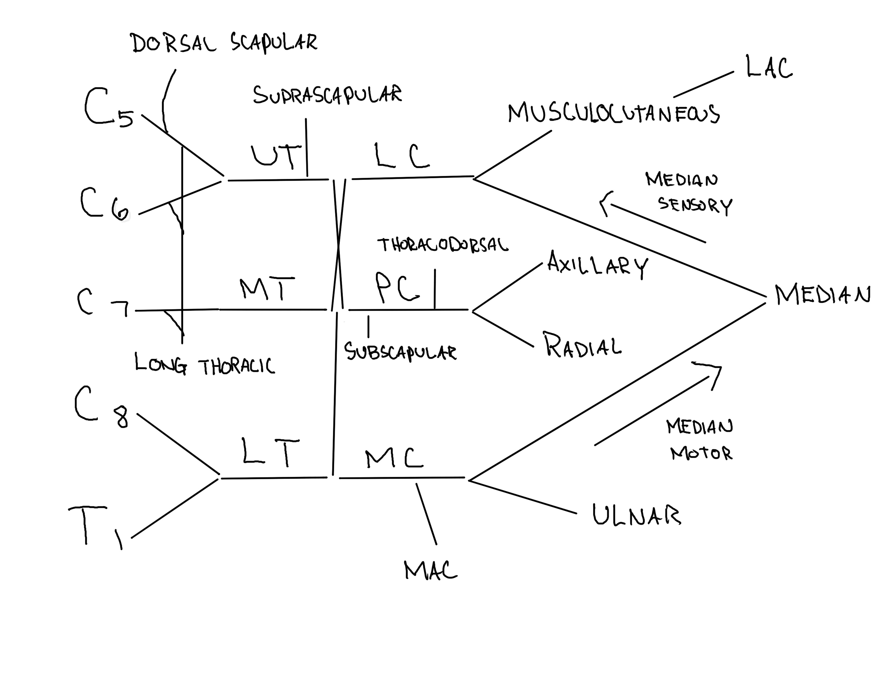

Quick clinical reference for muscle innervation and nerve anatomy
Quick Guide: Click on any muscle to see its innervation details, or click on a nerve to see all muscles it supplies. In the Brachial Plexus section, click anatomical levels to see NCS/EMG protocols and clinical findings.
Muscles
Nerves
Brachial Plexus
Roots
Trunks
Divisions
Cords
Nerves
Muscles
Nerves
Lumbosacral Plexus
Roots
Trunks
Major Branches
Terminal Nerves
Full Brachial Plexus Diagram

Click image to enlarge. Select a level below to see specific diagrams.
Trunks
Cords
Complete Brachial Plexus Reference
Level
Roots
Sensory NCS
Motor NCS
EMG Muscles
Clinical Findings
Anatomical Diagrams
Interactive Brachial Plexus Diagram
Click on trunks (purple) or cords (green) to see details
Reference: Shan Chen, et al. AANEM Practice Topic. Muscle Nerve 2016;54: 371–377.
Typical CIDP Clinical Criteria
Criteria
Description
Muscle weakness
Progressive or relapsing, symmetric, proximal and distal muscle weakness of upper and lower limbs
Sensory involvement
Involvement of at least two limbs
Duration
Developing over at least 8 weeks
Reflexes
Absent or reduced tendon reflexes in all limbs
Strongly Supportive of Demyelination - EDX Criteria
Criterion
Details
Motor distal latency
≥50% above ULN in two nerves (excluding median neuropathy at the wrist from carpal tunnel syndrome)
Conduction velocity
≥30% below LLN in two nerves
F-wave latency
≥20% above ULN in two nerves (≥50% if distal CMAP <80% of LLN)
Absence of F-waves
In two nerves (with distal CMAP amplitudes ≥20% of LLN) + ≥1 other demyelinating parameter in ≥1 other nerve
Conduction block
≥30% reduction proximal to distal CMAP amplitude excluding tibial nerve, distal CMAP ≥20% of LLN in two nerves, or in one nerve + ≥1 other demyelinating parameter (except absence of F-waves)
Temporal dispersion
>30% increase in duration between proximal and distal CMAP (≥100% in tibial nerve) in ≥2 nerves
Distal CMAP duration
Prolongation in ≥1 nerve + ≥1 other demyelinating parameter in ≥1 other nerve
Weakly Supportive of Demyelination - EDX Criteria
Criterion
Description
Weakly supportive of demyelination
As in "strong supportive" but in only one nerve
Reference: Van den Bergh, P. Y., et al. (2021). European Academy of Neurology/Peripheral Nerve Society guideline on diagnosis and treatment of chronic inflammatory demyelinating polyradiculoneuropathy. Journal of the Peripheral Nervous System, 26(3), 242-268.